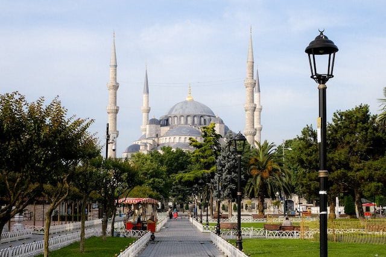

Visiter Istanbul vous tente ? Alors découvrez les choses incontournables à faire dans une ville remplie de lieux merveilleux !
Un voyage à Istanbul n’est pas complet sans une croisière sur le
Bosphore. Cela offre non seulement un bel aperçu de la ville, mais les rives à la fois
européenne et asiatique du célèbre chenal ont beaucoup à offrir : un grand nombre d’anciens
palais et demeures s’y trouvent, ainsi que la Tour de Léandre.
Concernant la durée de la croisière, vous avez le choix entre une visite courte (si vous
êtes pressés) ou longue (sur une journée). L’été, la croisière au coucher du soleil est très
demandée. Par conséquent, pensez à réserver à l’avance si vous souhaitez faire la croisière
sur ce créneau horaire.!
L’histoire complètement folle de ce lieu l’a rendue
célèbre dans le monde entier. Construite en tant qu’église au VIe siècle, elle devient
ensuite une mosquée lorsque les Ottomans prennent le contrôle de la ville, au XVe siècle.
Et c’est justement ce changement de religion qui lui a valu cette architecture absolument
exceptionnelle. En effet, comme en témoignent le dôme et les minarets, Sainte-Sophie mélange
donc des éléments typiques des églises chrétiennes et des mosquées.
Aujourd’hui, cette merveille architecturale abrite un musée retraçant son histoire. La
visite prend, en général, une heure. D’ailleurs, il est vivement conseillé d’opter pour une
visite guidée, afin de profiter pleinement des histoires et des secrets du lieu de culte.
Si vous visiter un jour Istanbul, il sera difficile ne pas
apercevoir les nombreux palais de la ville. Tous valent, certes, le détour, mais il en
existe un qu’il ne faut manquer sous aucun prétexte : le palais de Topkapi.
Ce palais (Topkapı Sarayı en turc) n’est nul autre que l’ancienne résidence principale des
sultans. Les lieux ont ainsi vu défiler les différents souverains de l’Empire ottoman
pendant près de 400 ans. Côte architecture, sous la dénomination de palais se cache en
réalité un complexe de pavillons, tous bâtis autour de quatre cours verdoyantes.
Il est bien évidemment impossible de visiter la première métropole
turque sans faire un tour au Grand Bazar d’Istanbul.
En plus d’être l’un des symboles de la ville, c’est aussi le plus grand marché couvert du
monde.
Et contrairement aux idées reçues, le Grand Bazar n’est pas un attrape-touristes. Les locaux
y viennent également acheter leurs produits. Toutefois, cela ne veut pas dire que tous les
étals sont remplis de produits authentiques. Des contrefaçons et produits de mauvaise
qualité circulent et les prix affichés peuvent être excessifs.
Il faut donc s’apprêter à l’exercice de la négociation. Rassurez-vous, cela n’est pas mal
vu. On pourrait même dire que c’est traditionnel. À vous, donc, de vous montrer plus malin
que votre interlocuteur !
Et si parmi les choses à faire à Istanbul, vous preniez un peu de
hauteur ? C’est en tout cas ce que la Tour de Galata vous propose ! Depuis son toit, vous
bénéficierez d’une vue panoramique sur la ville. À 360°, s’il vous plaît !
En cas de beau temps, vous pourriez même apercevoir les îles du Prince. Choisissez-donc bien
votre jour de visite ! Ensuite, flânez dans les rues adjacentes dans lesquelles il est
agréable de déambuler.

La mosquée Sultanahmet Camii est moins célèbre que les
incontournables précédents. Pourtant, ses mosaïques de couleur bleu (d’où son surnom)
attirent les touristes du monde entier. N’oublions pas non plus l’imposante façade, qui
impressionnent les visiteurs dès leur arrivée.
La visite de la Mosquée Bleue est donc une excellente idée. Néanmoins, vous n’êtes pas les
seuls à vouloir y pénétrer. C’est pourquoi nous vous conseillons d’arriver tôt le matin.


De toutes les choses à faire à Istanbul, le Palais de Dolmabahçe a
certainement l’histoire la plus improbable. En effet, cette résidence voit le jour en 1856
sous l’impulsion du sultan Abdülmecit Ier. La raison ? Essentiellement pour prouver que
l’Empire ottoman, alors en déclin, allait en fait très bien.
Oui, ce palais qui aura coûté l’équivalent de 35 tonnes d’or est en quelque sorte un coup de
communication. Un peu cher payé ! Mais bon, cela vous permettra d’y voir un splendide lustre
en cristal de Bohême, pesant 4,5 tonnes.

Istanbul n’est pas seulement fascinante à la surface : elle l’est
aussi sous terre. La Citerne Basilique est une magnifique pièce de l’ingéniosité byzantine.
Cette citerne souterraine spectaculaire avait pour mission de stocker l’eau potable,
apportée des aqueducs. L’eau était parfois ramenée depuis l’actuelle Bulgarie.
Avec sa lumière tamisée et la musique classique ajoutée au bruit de fond des gouttes d’eau,
certains considèrent l’endroit comme romantique. Pour d’autres, la Citerne Basilique est un
peu effrayante.
En raison de la grande importance de cette place dans l'hitoire de
la ville,
c'est le lieu de prédilection pour organiser des événements publics et les célébrations
sociales.
Elle est aussi connue pour avoir été le point de départ de différentes manifestations
politiques,
qui se sont souvent terminées dans la violence.
Depuis la place part une des principales artères commerciales de la ville,
Istiklal Caddesi (Avenue de l'Indépendence), une agréable rue piétonne que
l'on peut traverser à l'aide du tramway nostalgique qui conduit au funiculaire de Tünel.
La cuisine turque est parmi les plus riches de toutes,
mélangeant saveurs de différents continents et cultures.
Tous ces plats sont préparés avec des produits frais dont vous pouvez même acheter
vous-même.
Pour cela, prenez la direction des marchés citadins (appelés pazar). S’ils ne paient pas de
mine,
vous pouvez être sûr que vous recevrez un accueil chaleureux de la part des marchands..
Parmis les restaurants célébres à Isanbul, "Almadina restaurant" Très connu grâce au chef
« Burak »
,
l’ami des stars comme ils l ‘appellent les turque.
Des plats excellents pour des prix abordables. Une expérience unique et à ne pas rater !
D'abord rendue célébre grâce au feuilleton turque "Aski Memnu"
(amour intérdit),
La Maison Vehbi Koç, transformée en espace d'exposition permanent, est au service de la
culture et des arts
La Vehbi Koç House a ouvert ses portes aux visiteurs en septembre 2018 avec une exposition
spéciale. Une sélection de la collection
de tapis offerte à la Fondation Vehbi Koç en 2007 par Josephine Powell, photographe et
collectionneuse américaine considérée comme l'une
des dernières voyageuses d'Anatolie, est exposée à la Vehbi Koç Büyükdere House.